Portugalia 2001 și cannabisul
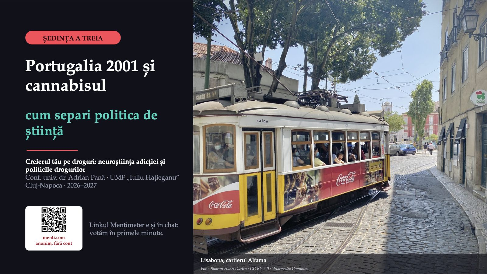
1 / 43Bine ați venit la a treia ședință. Azi vorbim despre Portugalia și despre cannabis, dar întrebarea din titlu e mai largă: cum despărțim, într-o discuție despre droguri, ce s-a întâmplat de ce ar trebui să facem.
Ce am schimbat după răspunsurile voastre
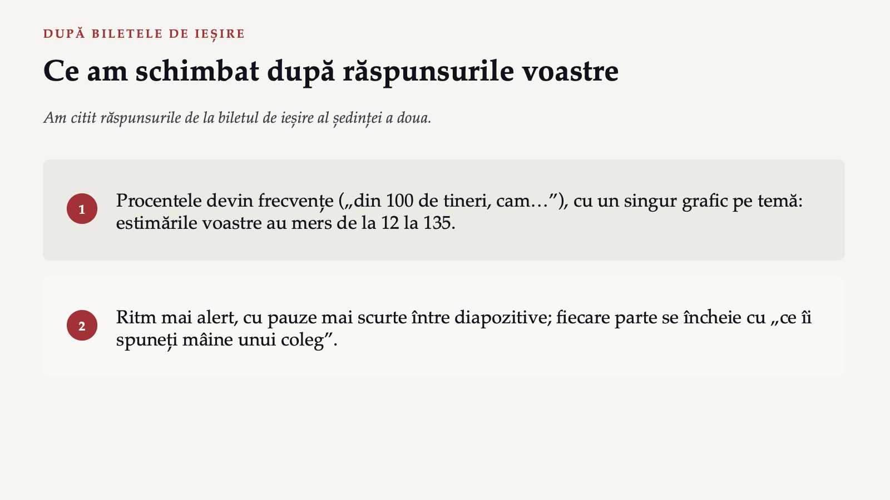
2 / 43Am citit biletele de ieșire de data trecută. Două lucruri se schimbă de azi: cifrele vin ca frecvențe, din 100 de oameni, cu un singur grafic, și ritmul e mai alert. Fiecare parte se încheie cu o frază pe care o puteți spune mâine unui coleg.
Două titluri în aceeași seară
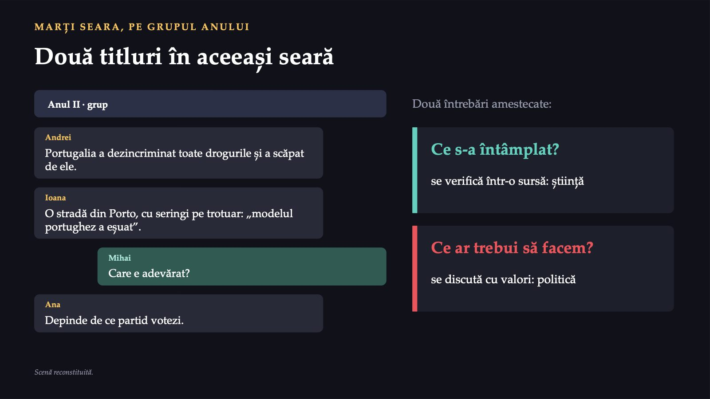
3 / 43Două linkuri, la zece minute distanță. Se contrazic pentru că amestecă două feluri de întrebări, nu pentru că unul ar minți. Prima întrebare se verifică într-o sursă. A doua se discută cu valori. Răspunsul provizoriu la titlu: despre fiecare propoziție, întrebați „aș putea verifica asta într-o sursă?”.
„România ar trebui să adopte modelul portughez de dezincriminare a consumului personal de droguri.”
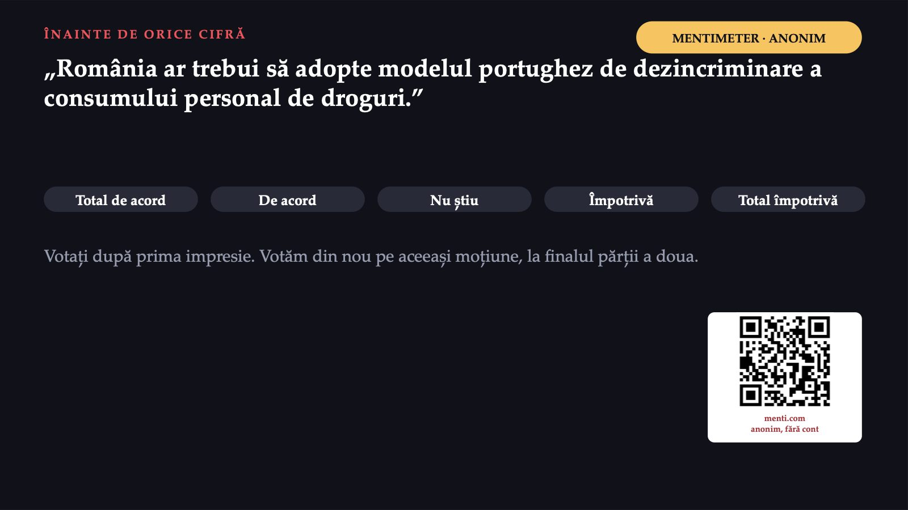
4 / 43Votați acum, înainte de orice cifră. Nu există variantă greșită; contează prima impresie. La finalul părții a doua votăm din nou pe aceeași moțiune.
Ce prevedea, exact, legea din 2000
![PARTEA ÎNTÂI · LISABONA Ce prevedea, exact, legea din 2000 LEI N.º 30/2000 · ART. 2 „o consumo, a aquisição e a detenção para consumo próprio […] constituem contra-ordenação” Consumul, achiziția și deținerea pentru consum propriu sunt contravenții, nu infracțiuni: cel mult cantitatea pentru 10 zile. În vigoare de la 1 iulie 2001. Trei prevederi 1 Toate drogurile, nu numai cannabisul. 2 Vânzarea rămâne faptă penală. 3 Cine cerea singur ajutor nu intra sub lege. Forma inițială a legii; forma în vigoare azi nu a putut fi verificată. Sursa: Legea portugheză nr. 30/2000, art. 2, forma publicată în 2000.](diapozitive/C03/005.jpg) 5 / 43
5 / 43Multe discuții despre modelul portughez se poartă fără textul legii. Iată-l, în forma publicată în 2000: consumul și deținerea pentru consum propriu devin contravenții, în limita cantității pentru zece zile. Legea privea toate drogurile. Vânzarea a rămas penală. Iar cine cerea singur ajutor nu intra sub lege.
Comisia, nu procurorul
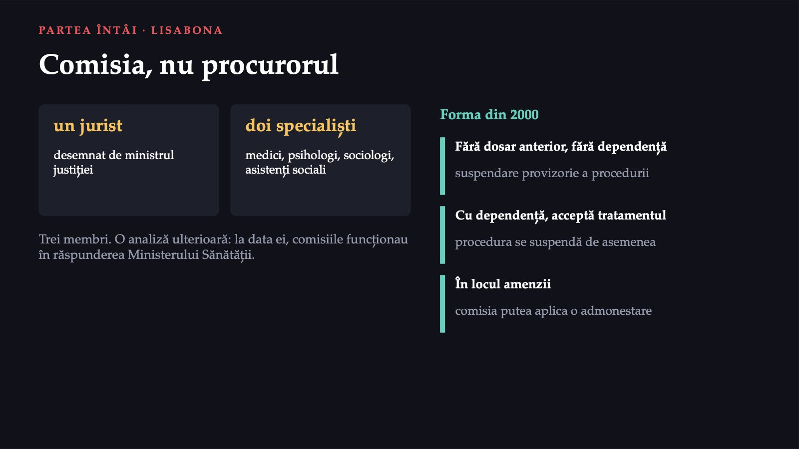
6 / 43Instituția pe care România nu o are: comisia pentru descurajarea toxicodependenței. Trei membri, dintre care unul jurist. Pentru un tânăr fără dosar anterior și fără dependență, procedura se suspenda provizoriu. În locul amenzii, comisia putea aplica o simplă admonestare.
Și la noi?
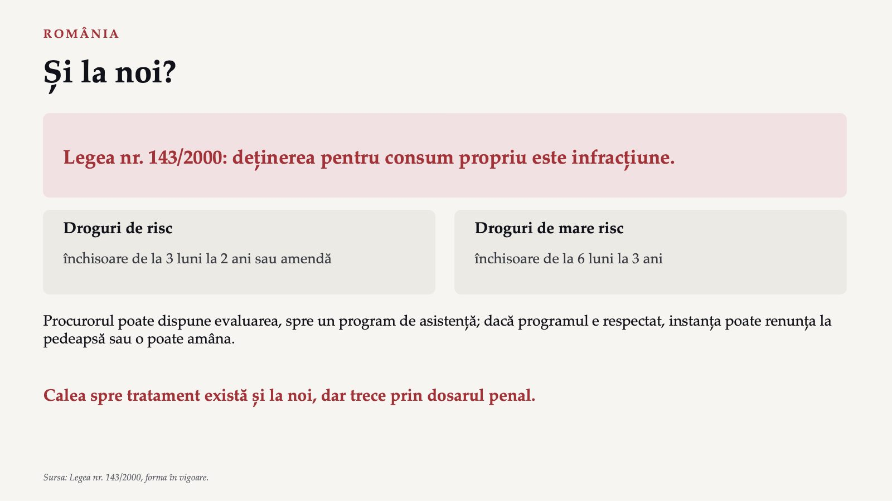
7 / 43La noi, deținerea pentru consum propriu este infracțiune. Există și la noi o cale spre sănătate: evaluarea dispusă de procuror și programul de asistență. Diferența față de Portugalia este că, la noi, această cale trece prin dosarul penal.
Lisabona și Cluj, aceeași zi
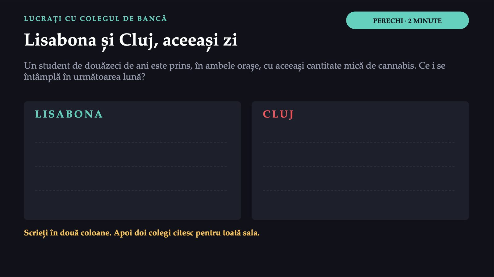
8 / 43Același student, aceeași cantitate, aceeași zi, două orașe. Scrieți în două coloane ce i se întâmplă în fiecare oraș în luna următoare.
După decriminalizare, consumul de droguri în Portugalia…
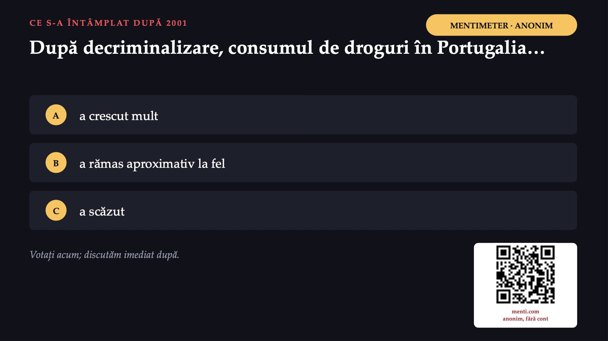
9 / 43Un singur vot, înainte de date: ce credeți că s-a întâmplat cu consumul după 2001?
Ce spune comisia The Lancet
![COMISIA THE LANCET · 2016 Ce spune comisia The Lancet Portugalia: economii, mai puține încarcerări, beneficii pentru sănătatea publică și fără o creștere semnificativă a consumului. Dezincriminarea, împreună cu extinderea serviciilor de prevenire a HIV, a permis controlul unei epidemii explozive de HIV prin injectare. Citiți a doua frază încă o dată. Nu scrie „dezincriminarea a oprit epidemia”. Comisia nu e un observator neutru: recomandă dezincriminarea, iar unul dintre autori era afiliat Ministerului Sănătății portughez. Sursa: Csete și colab., The Lancet, 2016.](diapozitive/C03/010.jpg) 10 / 43
10 / 43Comisia nu spune „a scăzut”. Spune „fără o creștere semnificativă”. Și, la HIV, spune „împreună cu extinderea serviciilor”. Comisia are o poziție declarată: recomandă dezincriminarea. Poziția nu îi invalidează datele, dar se spune odată cu citarea.
Problema atribuirii
![PRIMUL TERMEN NOU Problema atribuirii Două schimbări în același timp; datele nu spun cât din rezultat se datorează fiecăreia. „Știm că s-a îmbunătățit, nu știm cui îi dăm meritul.” Portugalia: o analiză din 2021 scrie că scăderea infecțiilor și a încarcerărilor nu poate fi legată liniar de lege. SPITALUL ȘI NOUL PROTOCOL În aceeași lună: doi medici noi la urgențe și un protocol nou de triaj. Așteptarea scade la jumătate. Directorul: „protocolul a funcționat”. Sindicatul: „angajările au funcționat”. Amândoi citesc aceeași cifră. Valori ipotetice.](diapozitive/C03/011.jpg) 11 / 43
11 / 43Primul termen nou: problema atribuirii. Pe scurt: știm că s-a îmbunătățit, nu știm cui îi dăm meritul. În Portugalia, legea și serviciile au venit deodată, iar datele nu le pot separa retrospectiv. Exemplul spitalului are valori ipotetice; ca să împărțiți meritul, v-ar trebui un spital care a făcut doar una dintre schimbări.
Portugalia a învins drogurile prin lege.
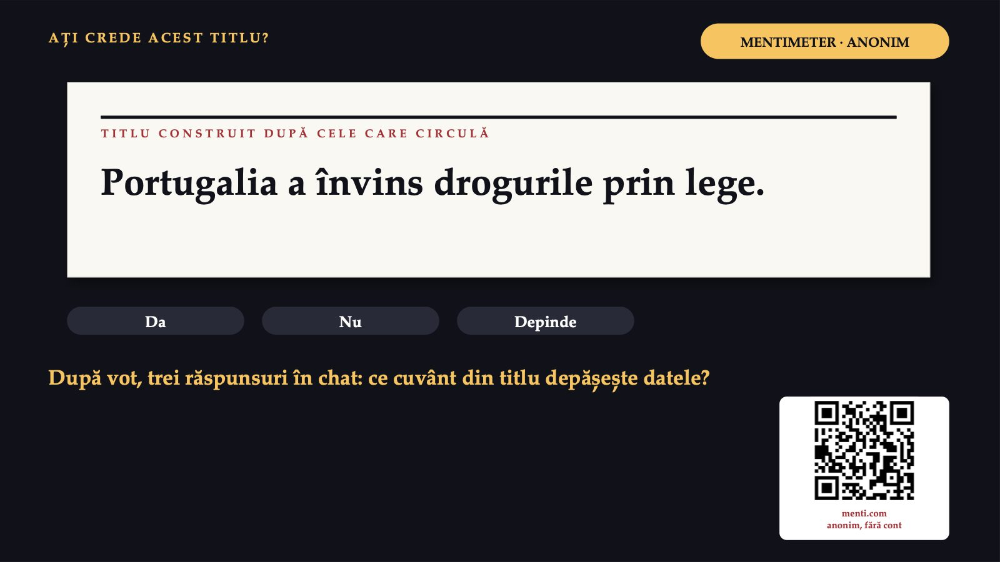
12 / 43Un titlu construit după cele care circulă. L-ați crede? După vot: care cuvânt din titlu spune mai mult decât datele?
Portugalia a învins drogurile prin lege.
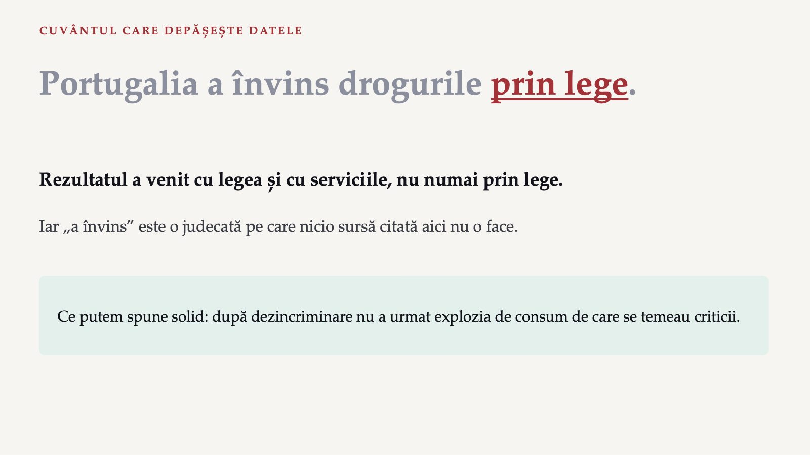
13 / 43Cuvântul care depășește datele este „prin lege”. Rezultatul a venit cu legea și cu serviciile. Iar „a învins” este o judecată, nu un rezultat. Afirmația solidă e mai modestă: consumul nu a explodat.
Povestea nu s-a oprit în 2001
![DUPĂ 2001 Povestea nu s-a oprit în 2001 2001 legea intră în vigoare 2008 Curtea Supremă a restabilit infracțiunea peste 10 zile Paradoxul, după o analiză din 2021: o țară care a dezincriminat a devenit, în ultimul deceniu, mai severă cu consumatorii. Dezincriminare ≠ legalizare Consumatorul nu mai e infractor; cine vinde rămâne în afara legii. Statul nu controlează ce se vinde: nici puritatea, nici concentrația. Cifrele recente din presă (decese, seringi, bugete) nu au putut fi verificate în documentul primar.](diapozitive/C03/014.jpg) 14 / 43
14 / 43Legea nu a rămas neschimbată în practică. În 2008, Curtea Supremă portugheză a restabilit calificarea de infracțiune peste pragul de zece zile. Și rețineți diferența: Portugalia a dezincriminat, nu a legalizat. Despre cifrele recente din presă, regula e aceeași în ambele direcții: care indicator, în ce an, din ce sursă.
Ce îi spuneți mâine unui coleg
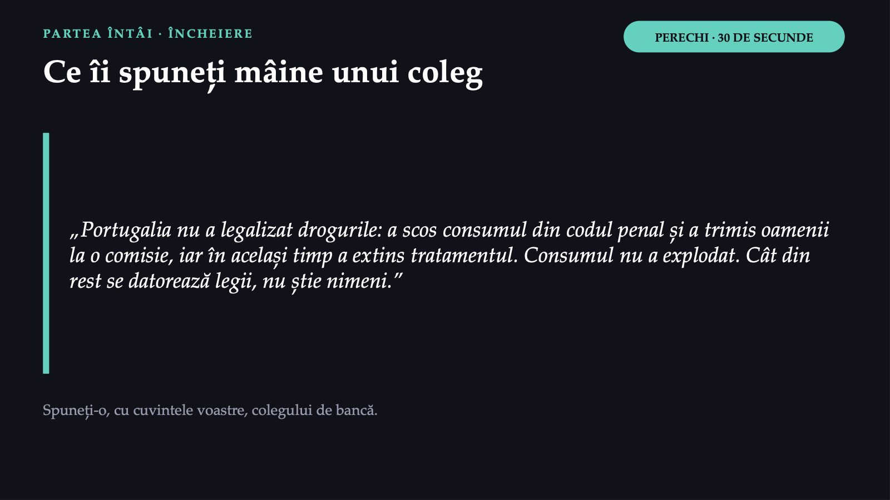
15 / 43Portugalia nu a legalizat drogurile: a scos consumul din codul penal și a extins, în același timp, tratamentul. Consumul nu a explodat. Cât din rest se datorează legii, nu știe nimeni.
Moțiunea și cele două tabere
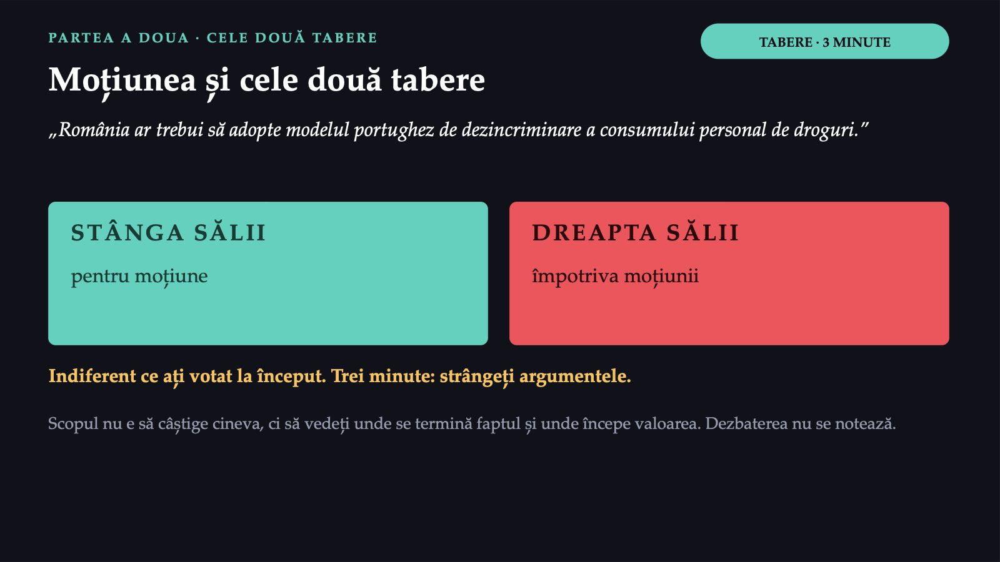
16 / 43Aceeași moțiune ca la început. Partea stângă susține, partea dreaptă se opune, indiferent ce ați votat. Scopul nu este să câștige cineva: urmăriți, în propriile argumente, unde se termină faptul și unde începe valoarea.
Prima rundă
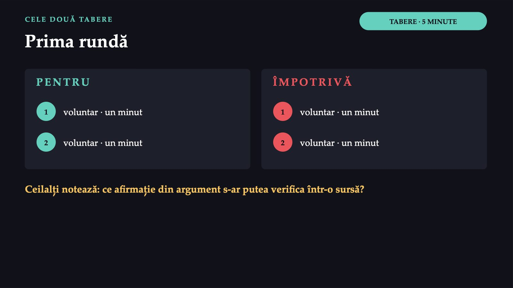
17 / 43Doi voluntari din fiecare tabără, câte un minut. Cei care ascultă notează afirmațiile care s-ar putea verifica într-o sursă.
Dovada care vă contrazice
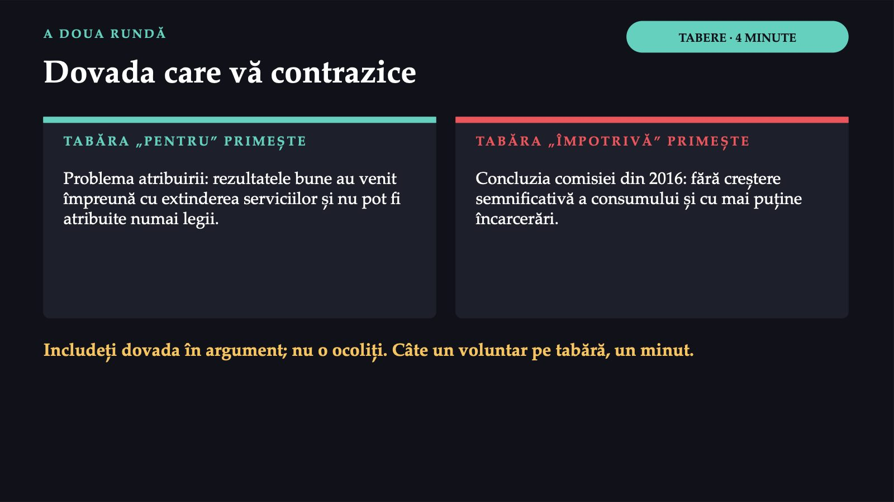
18 / 43Fiecare tabără primește dovada care îi contrazice poziția. Regula: o includeți în argument, nu o ocoliți. Un argument care rezistă dovezii contrare e mai puternic decât unul care nu o cunoaște.
Fapt sau valoare?
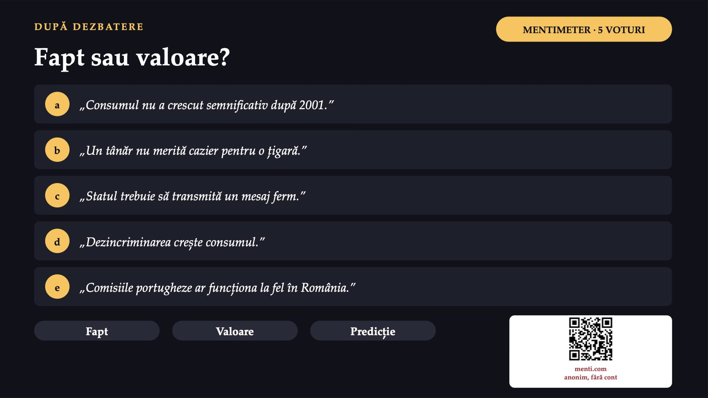
19 / 43Cinci propoziții, cinci voturi rapide. Pentru fiecare: este un fapt verificabil, o alegere de valori sau altceva?
Al treilea tip: predicția
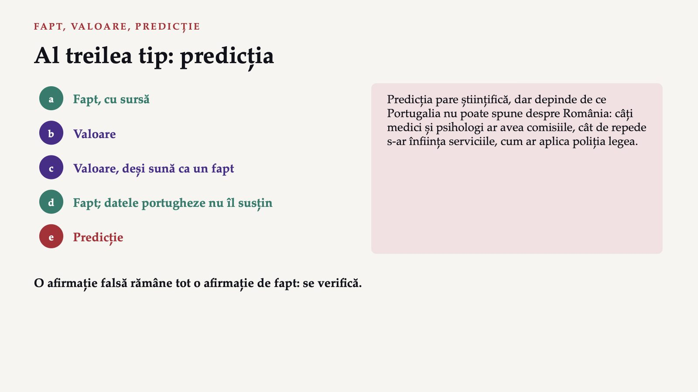
20 / 43Între fapt și valoare există un al treilea tip: predicția despre ce s-ar întâmpla la noi. Și rețineți propoziția d: este o afirmație de fapt, chiar dacă datele portugheze nu o susțin. O afirmație falsă tot de fapt rămâne.
Aceeași moțiune, al doilea vot
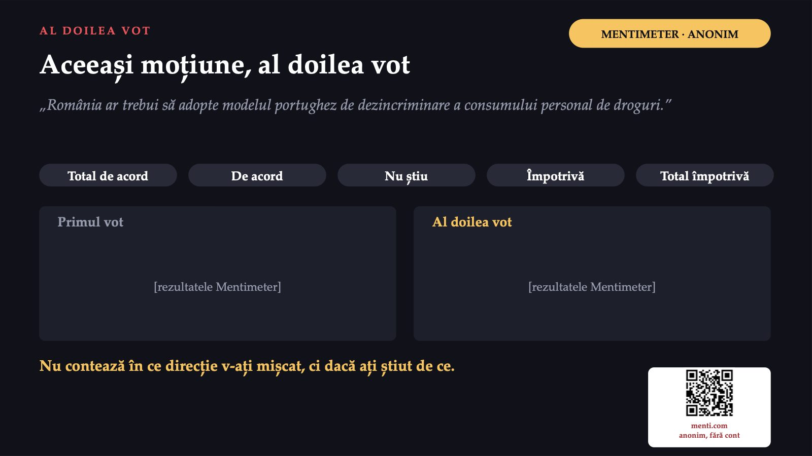
21 / 43Votați din nou, pe aceeași moțiune. Nu contează în ce direcție v-ați mișcat, ci dacă știți de ce.
Ce îi spuneți mâine unui coleg
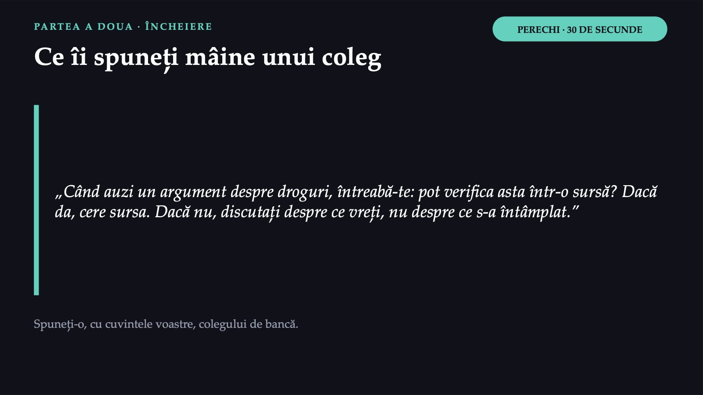
22 / 43Când auziți un argument despre droguri, întrebați-vă: pot verifica asta într-o sursă? Dacă da, căutați sursa. Dacă nu, discutați despre ce vreți, nu despre ce s-a întâmplat.
Zece minute
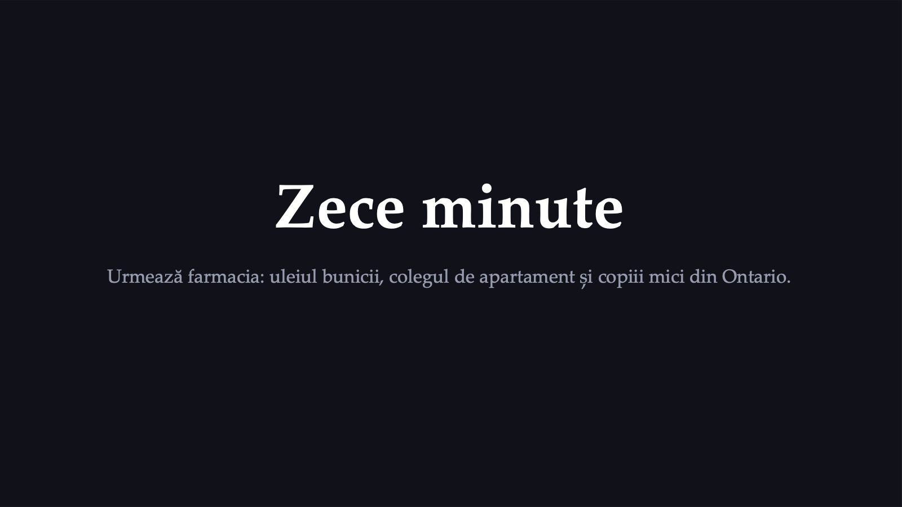
23 / 43Ne vedem în zece minute. Urmează partea despre cannabis ca medicament.
Mesajul de duminică
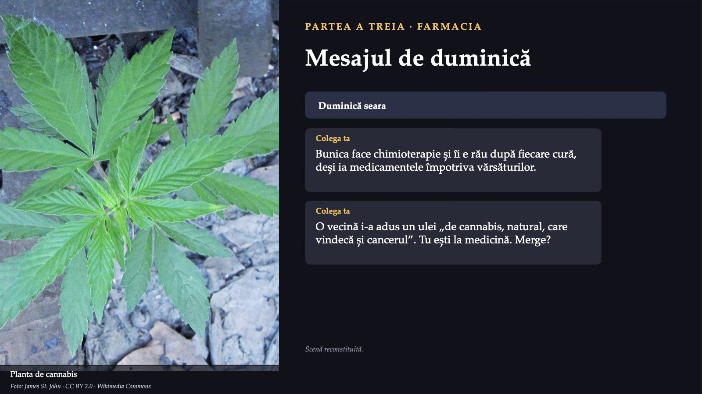
24 / 43Un mesaj pe care mulți dintre voi îl veți primi. Bunica unei colege face chimioterapie, îi este rău după fiecare cură, iar o vecină i-a adus un ulei de cannabis. Ce îi răspundeți?
Ce îi răspundeți?
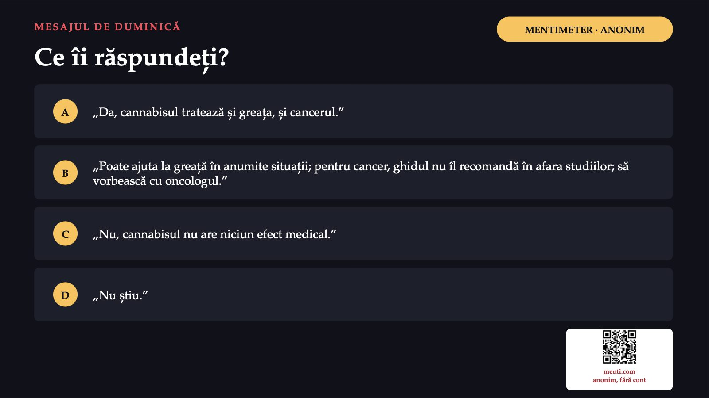
25 / 43Patru răspunsuri posibile. Alegeți-l pe cel pe care l-ați trimite.
1
 26 / 43
26 / 43Varianta sprijinită de dovezi e B. Raportul academiilor americane din 2017 găsește dovezi solide pentru trei situații, nu pentru douăzeci. Și la a treia situație a pus în formulare două cuvinte care contează: raportată de pacient.
Rezultatul raportat de pacient
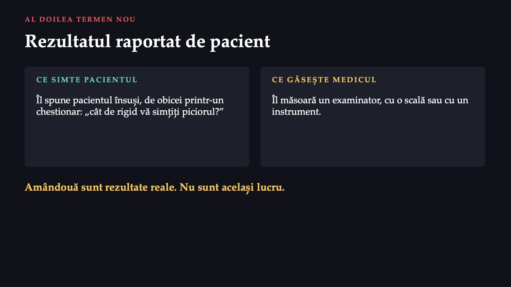
27 / 43Al doilea termen nou: rezultatul raportat de pacient. În cuvinte obișnuite: ce simte pacientul, față de ce găsește medicul.
Ghidul din 2024 și scleroza multiplă
![GHIDUL ASCO 2024 · META-ANALIZA DIN 2018 Ghidul din 2024 și scleroza multiplă Greața de la chimioterapie Un adaos, nu un înlocuitor: numai când greața continuă cu profilaxia recomandată. Recomandare slabă; calitate moderată a dovezilor, scăzută pentru THC:CBD. Pentru cancer: numai în studii clinice. Scleroza multiplă 17 studii clinice, 3 161 de pacienți. Pacientul raportează ameliorare Scala Ashworth (examinatorul) niciun efect Surse: ghidul ASCO, 2024; Torres-Moreno și colab., JAMA Network Open, 2018.](diapozitive/C03/028.jpg) 28 / 43
28 / 43Pentru bunica colegei: canabinoizii pot fi un adaos, nu un înlocuitor, și numai când tratamentul standard nu a ajuns. Pentru tratamentul cancerului, ghidul spune să nu fie folosiți în afara studiilor clinice. La scleroza multiplă, pacienții au raportat ameliorare, iar scala aplicată de examinator nu a arătat niciun efect.
Pacientul spune „mai bine”, examinatorul nu vede nimic
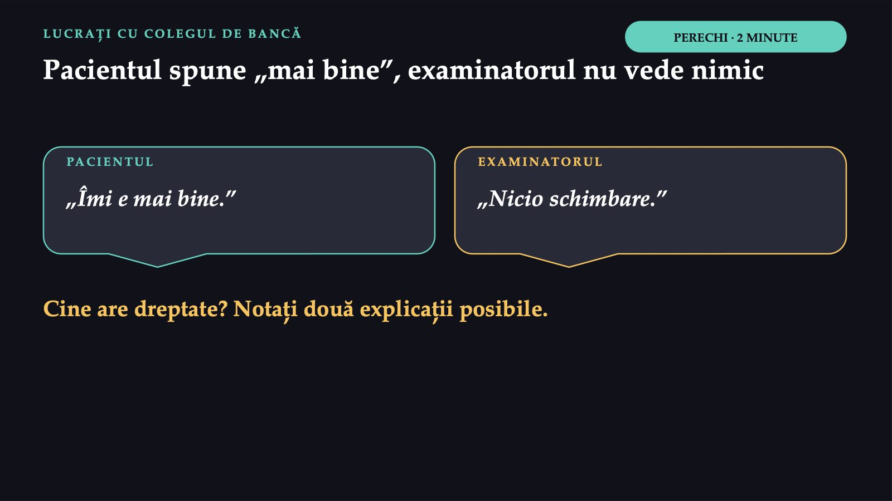
29 / 43Pacientul spune că îi este mai bine, examinatorul nu găsește nicio schimbare. Cine are dreptate? Notați împreună cu colegul două explicații.
Trei explicații legitime
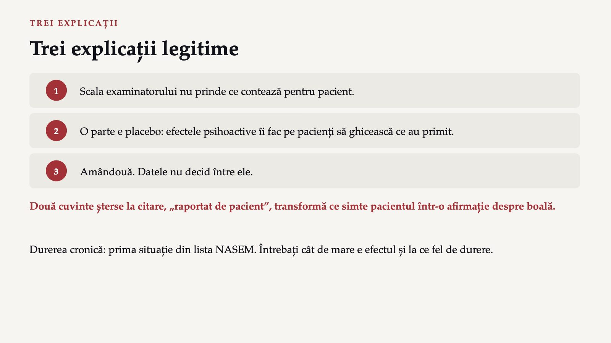
30 / 43Toate trei explicațiile sunt legitime, iar datele de aici nu decid între ele. Ce puteți face e să urmăriți formularea exactă. Iar la durere, două întrebări: cât de mare este efectul și la ce fel de durere.
Colegul de apartament
![CANNABISUL ȘI PSIHOZA Colegul de apartament Mesaje private Radu, anul II Cineva mă urmărește prin telefon. Pe bune. Radu, a doua zi Am glumit aseară, lasă. Sunt ok. Fumează aproape în fiecare seară, „ca să se relaxeze după învățat”. Ce se știe sigur de aproape patru ori șansele de psihoză la consumatorii cei mai intensivi de aproximativ trei ori consumul zilnic, într-un studiu din 2019 de aproape cinci ori consumul zilnic de cannabis puternic, THC de cel puțin 10% O asociere dovedită. Cauzalitatea nu poate fi stabilită fără echivoc din aceste date. Scenă reconstituită.](diapozitive/C03/031.jpg) 31 / 43
31 / 43Ce se știe sigur: consumul de cannabis are o asociere dovedită cu psihoza, iar riscul cel mai mare e la cei care consumă cel mai des. Autorii spun însă că o legătură cauzală nu poate fi stabilită fără echivoc din aceste date.
50
![DIN 100 DE CAZURI NOI DE PSIHOZĂ Cifra care presupune ce ar trebui să demonstreze 50 din 100 · Amsterdam 30 din 100 · Londra 12 din 100 · toate cele 11 locuri „s-ar evita fără cannabisul puternic”: calculat presupunând cauzalitatea. Un studiu care compară bolnavi cu sănătoși nu poate exclude că primele semne au venit înaintea consumului. Asocierea rămâne după ajustarea pentru vârsta la primul consum, dar ajustarea nu arată ce a apărut mai întâi. Sursa: Di Forti și colab., The Lancet Psychiatry, 2019.](diapozitive/C03/032.jpg) 32 / 43
32 / 43Cifra a circulat mult: jumătate din cazurile noi de psihoză de la Amsterdam. Autorii au calculat-o presupunând cauzalitatea. Este o cifră care se calculează după ce ați acceptat că cannabisul produce psihoza, nu una care o dovedește.
Potent cannabis increases risk of serious mental illness, says study
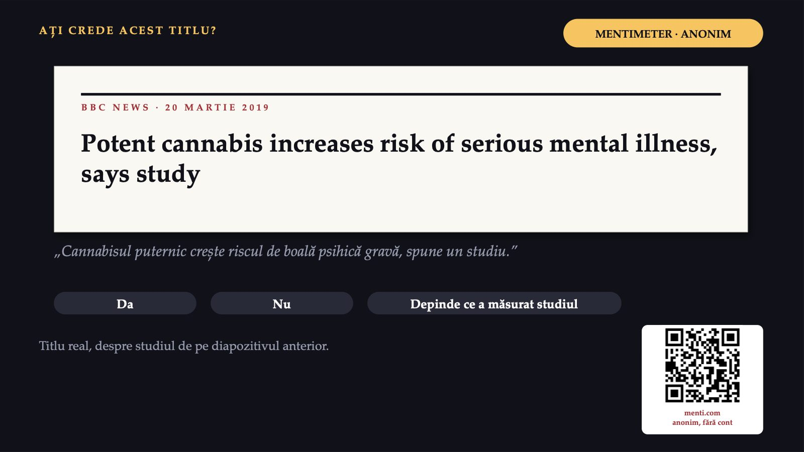
33 / 43Un titlu real, publicat de BBC News despre studiul pe care tocmai l-am văzut. L-ați crede?
Ce arată un studiu care poate testa direcția
![CE A MĂSURAT STUDIUL Ce arată un studiu care poate testa direcția „crește” spune că o cauză produce un efect; studiul a măsurat o asociere. Articolul însuși notează mai jos că studiul nu e o dovadă definitivă. UN STUDIU GENETIC, 2018 Folosește variantele genetice moștenite la întâmplare ca pe o tragere la sorți naturală. Rezultat: la cei care consumă, șansele de schizofrenie sunt cu aproximativ o treime mai mari; datele obișnuite de observație dau o estimare foarte apropiată. Ce rămâne solid: consumul frecvent se asociază cu psihoza, iar studiul genetic sprijină un efect real, fără să închidă discuția.](diapozitive/C03/034.jpg) 34 / 43
34 / 43Cuvântul de urmărit este „crește”: el descrie o cauză, iar studiul a măsurat o asociere. Un studiu genetic din 2018 se apropie mai mult de întrebarea despre direcție și sprijină ideea unui efect real, fără să închidă discuția. Ce nu e solid: mărimea exactă a efectului.
Ce îi spuneți mâine unui coleg
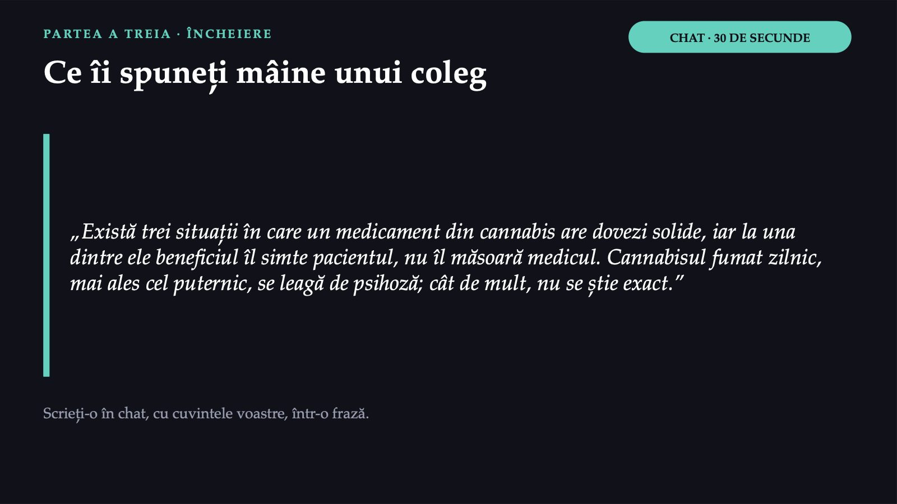
35 / 43Trei situații cu dovezi solide, iar la una dintre ele beneficiul îl simte pacientul, nu îl măsoară medicul. Cannabisul fumat zilnic, mai ales cel puternic, se leagă de psihoză; cât de mult, nu se știe exact.
Legalizarea reglementată
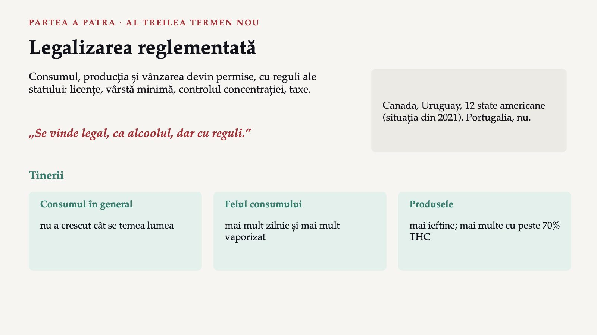
36 / 43Al treilea termen nou: legalizarea reglementată. Se vinde legal, ca alcoolul, dar cu reguli. Este altceva decât ce a făcut Portugalia. La tineri, rezultatul seamănă cu cel portughez: consumul nu a crescut cât se temea lumea, dar s-a schimbat felul în care se consumă.
Copiii mici: de la aproximativ 2 la 18
![ONTARIO · COPIII DE 0–9 ANI · VIZITE LA URGENȚE Copiii mici: de la aproximativ 2 la 18 1,96 Înainte de legalizare ian. 2016 – sept. 2018 6,14 După legalizarea florilor oct. 2018 – ian. 2020 17,75 După apariția comestibilelor feb. 2020 – mart. 2021 vizite pe an, la 100 000 de copii Mai grave: internările au urcat de la aproximativ un sfert la aproape 4 din 10 vizite. Autorii: comestibilele comerciale par un factor-cheie. O bomboană arată ca o bomboană. Sursa: Myran și colab., JAMA Network Open, 2022; Ontario, Canada.](diapozitive/C03/037.jpg) 37 / 43
37 / 43Singurul grafic al ședinței. Cea mai clară schimbare nu privește adolescenții, ci copiii mici. La 100 000 de copii, vizitele la urgențe pentru cannabis au crescut de la aproximativ 2 pe an la aproximativ 6, apoi la aproximativ 18, după apariția comestibilelor. Mecanismul e banal: o bomboană arată ca o bomboană.
Ce regulă ar proteja cei mai mulți copii mici?
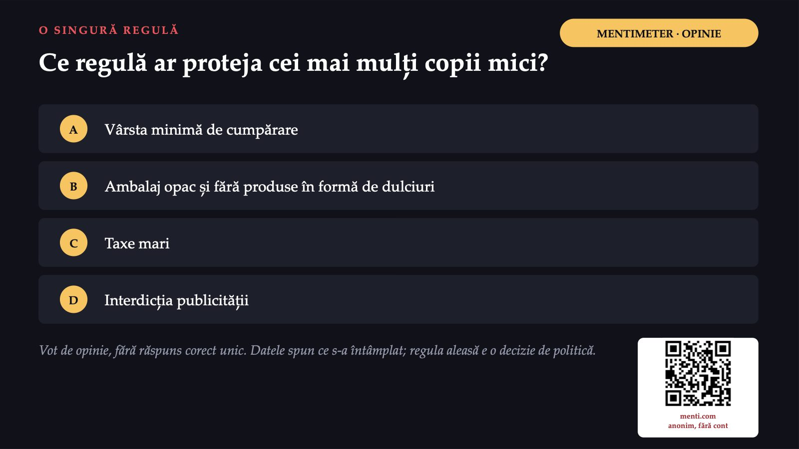
38 / 43Dacă ar trebui să scrieți o singură regulă, care ar fi? Datele din Ontario vorbesc mai direct de una dintre variante, dar nu au comparat regulile între ele. Alegerea e o decizie de politică: exact separarea despre care vorbim azi.
Ce îi spuneți mâine unui coleg
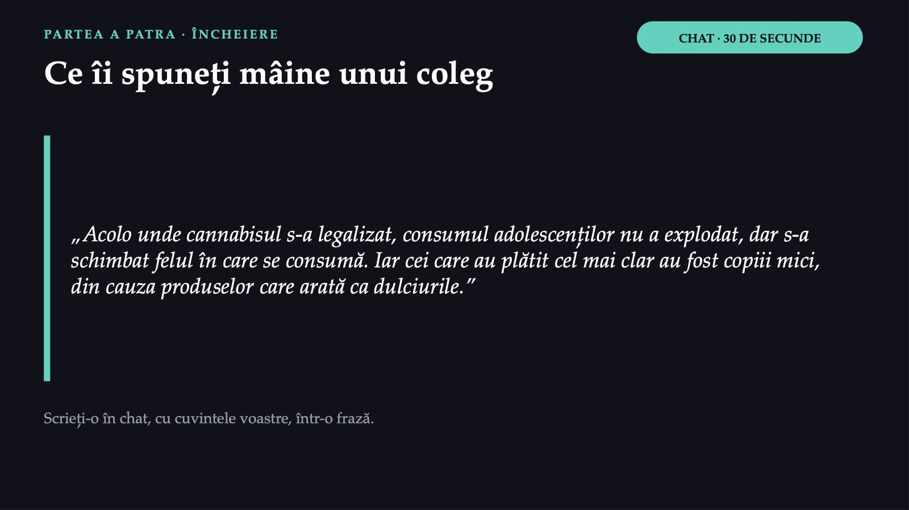
39 / 43Acolo unde cannabisul s-a legalizat, consumul adolescenților nu a explodat, dar s-a schimbat felul în care se consumă. Cei care au plătit cel mai clar au fost copiii mici.
Ce faceți diferit de mâine
![ÎN PRACTICĂ Ce faceți diferit de mâine 1 Un titlu despre droguri: ce s-a întâmplat (sursa, anul) și ce ar trebui să facem (valorile). 2 „Portugalia a legalizat drogurile”? Le-a dezincriminat; vânzarea a rămas ilegală. 3 Cannabis pentru greața de la chimioterapie: un adaos, cu oncologul; pentru cancer, numai în studii clinice. 4 „Cannabisul ameliorează spasticitatea”: căutați „raportat de pacient”. 5 „Jumătate din cazuri s-ar evita”: ce a presupus calculul? 6 Un coleg consumă zilnic și are episoade ciudate: nu glumiți; îl îndemnați să vorbească cu un medic.](diapozitive/C03/040.jpg) 40 / 43
40 / 43Șase lucruri pe care le puteți face de mâine, ca studenți și ca viitori medici.
Lisabona, taberele, farmacia, Ontario
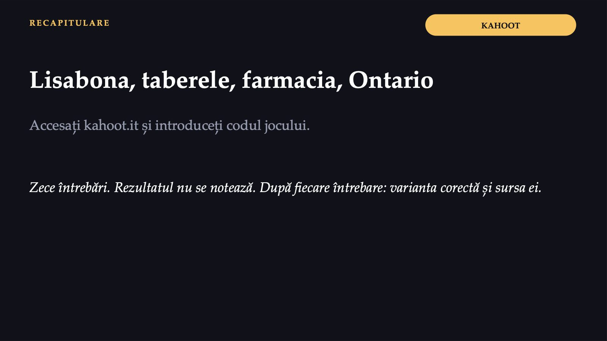
41 / 43Zece întrebări despre ce am discutat azi. Rezultatul nu se notează.
Ce nu putem afirma
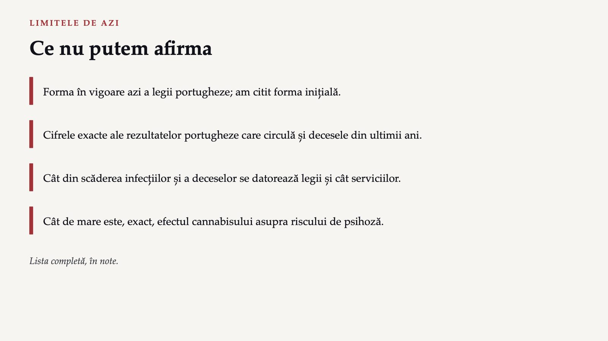
42 / 43Ce nu putem afirma pe baza surselor de azi. Lista completă e în note.
Trei întrebări pentru titular
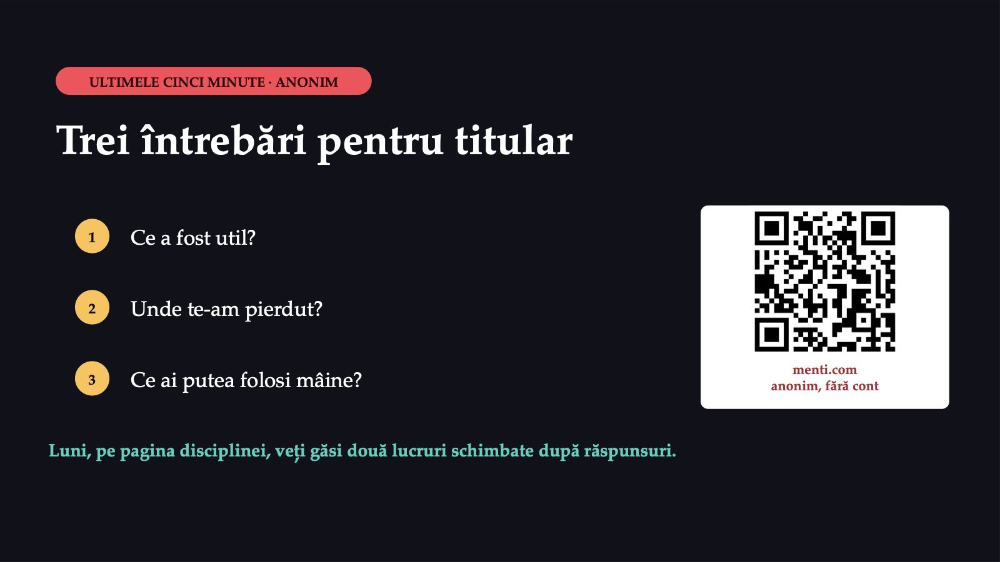
43 / 43Trei întrebări anonime, pe Mentimeter. Luni, pe pagina disciplinei, veți găsi două lucruri schimbate după răspunsurile voastre. Mulțumesc.
Săgeți sau spațiu: navigare · O: vedere de ansamblu · N: notele prezentatorului · F: ecran complet · Esc: închidere